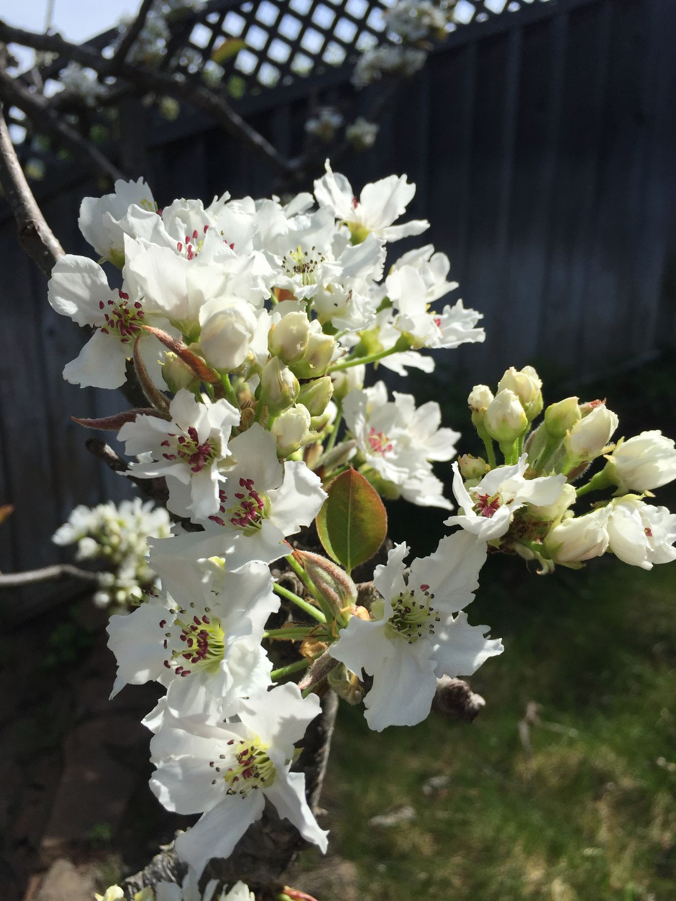

Return to Oakland
I'm now back in Oakland, in a familiar place, the room I spent the first few nights of my trip nearly four weeks ago. I return from the south, this time with a car, for two nights before I continue my journey northward. It feels nice to be in a familiar environment, as I begin a new part of my travels.
I'm excited to spend the next day hanging out with my friend in the East Bay. It will be a good time to slow down and catch up, since when I saw him at the start of the trip it was a bit of a whirlwind with lots of people.
Now I am going to spend the rest of the evening reading and doing laundry, since I am almost out of clothes. Today was good. Tomorrow will also be good.
